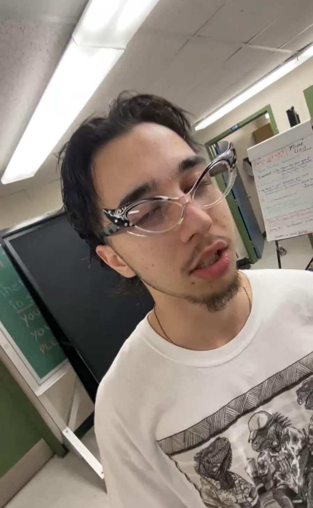

About Me
I like to design posters and stuff like that. I like to make posters for things I'm into, and I hope to print some of them out someday. I take inspiration from designs I see around me, especially when I'm on the bus downtown. All the business logos look pretty cool.
I also challenge myself to see what makes something a good design as well as what could be done better. I want to get better at web design, because I think web design is pretty cool, and can be a medium for interesting art.